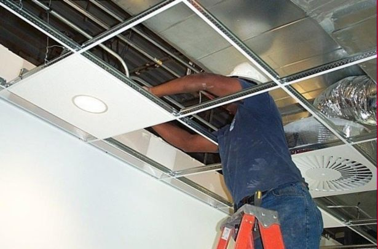
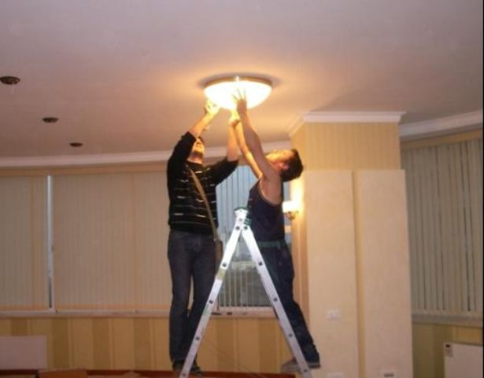
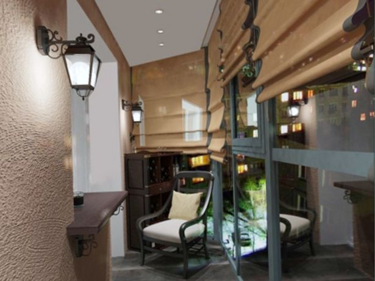
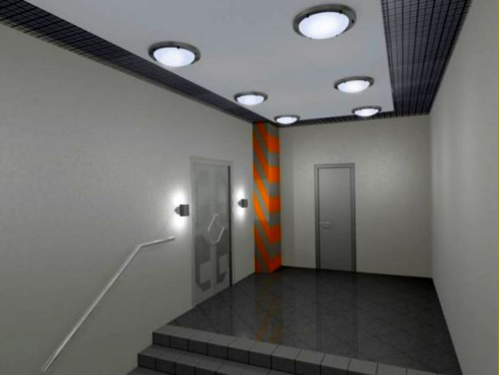
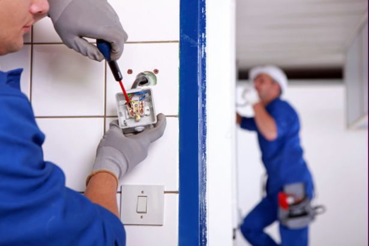

Качественный электромонтаж, Стаж 12 лет. Частный электрик, недорого.
Тел. 8 904 642 08 57 Николай.

Освещения жилого помещения.
Частный электрик по освещению.
Освещение является неотъемлемой частью интерьера жилого помещения.
От правильно подобранного освещения зависит многое, и было бы опрометчиво не думать об этом еще на стадии планирования интерьера помещений. И начинать нужно, прежде всего, с источников освещения.

Для освещения используются всевозможные осветительные приборы, но в жилых помещениях обычно применяются люстры и светильники настенные, напольные светильники (торшеры). Для рабочих мест используют светильники настольные. Каждый из этих осветительных приборов выполняет не только функцию источника света, а и является элементом интерьера.
Сколько стоит сделать освещение жилого помещения.
Площадь пола под освещения. |
Цена за кв. м. в руб. |
До 20 кв. м. |
От 6000 руб. |
40 |
10000 |
60 |
15000 |
80 |
20000 |
100 |
25000 |
120 |
30000 |
От 120 кв. м. |
От 35000 руб. |
Люстры потолочные самый распространенный осветительный прибор.

Люстры классического стиля являются воплощением роскоши, грации и изящества.
Их неповторимый изысканный дизайн вписывается практически в любой интерьер. Особенно эффектно выглядят такие люстры, когда лампочки в них включены по особым схемам. В последнее время стали популярными экономичные светодиодные люстры и подобные им светильники.
Стоимость их, конечно же, несколько выше стоимости обычных ламповых люстр, зато срок службы светодиодов в сотни раз больше, чем у ламп. Также с помощью светодиодов можно легко создавать различные варианты спектра освещения.
Сейчас в нашей стране растет тенденция к установке в комнате несколько небольших, потолочных светильников типа модерн-люстр в разных зонах комнаты.
Их конструкции просты и не содержат лишних деталей, но это не лишает их эстетичности и привлекательности. Они очень стильны, красивы и эстетичны. Модерн-люстры в интерьере смотрятся не менее роскошно и привлекательно, чем классические. Их основные характеристики – строгость стиля, элегантная внешность и оригинальность дизайн.
Бра и торшеры подходят для спальни, и детской, и прихожей.

О применении настольных светильников говорит их название.
Люстры и светильники дают возможность зонировать объем помещения, что придает интерьеру уют и оригинальность.
В настоящее время есть возможность купить люстры и светильники в разных торговых комплексах и многих специальных магазинах. Если говорить о Москве, то тут выбор гораздо шире, чем в любом другом городе России. Крупнейший Московский торговый центр «Каширский двор», продающий строительные материалы и оборудование для помещений, предлагает в огромном ассортименте люстры и светильники отечественного и зарубежного производства. Российский товар представляют Петушинский металлозавод, АО «Световые технологии», завод «Лампада», объединение «Фотон» и другие. Среди зарубежных светильников популярны немецкие OSRAM, Paulmann, Wunderlicht; голландские Philips, итальянские Lussole, бельгийские Globo и Massive.
Освещение квартиры.

Однако было бы неправильно полагать, что создания интерьера с помощью освещения требуют только основные комнаты квартиры или дома. Обязательно необходимо подумать и об освещении в таких также важных жилых помещениях, как кухня и санузел, причем ванная нуждается в правильном световом дизайнировании даже больше, чем гостиная и прихожая. Рассмотрим основные постулаты освещения ванной.
В типовых квартирах ванная, как правило, очень маленькая, без окон, а в качестве освещения установлен плафон над дверью. Если вы задумали провести ремонт и сделать освещение ванной комнаты более оригинальным, следует помнить, что существует три важных аспекта, которые нужно учитывать при выборе светильников. Это безопасность, функциональность и эстетичность.
Освещение в ванной должно быть функциональным.
Так как в ванной происходит постоянное использование воды, необходимо обеспечить безопасное освещение. Энергосберегающие светильники не должны иметь непосредственный контакт с водой, в продаже сегодня можно найти герметичные плафоны, предназначенные для комнат с высокой влажностью. Так же нужно позаботиться о том, чтобы нельзя было случайно разбить светильник или лампу, так как, принимая водные процедуры и находясь без одежды и обуви, можно легко пораниться. Запрещено располагать вблизи воды открытые светильники, снабженные лампами накаливания, так как лампа при работе накаляется и от случайно попавшей капельки воды может взорваться, а это может грозить замыканием и пожаром. Вообще вся проводка в ванной комнате должна быть скрыта. Если необходимо разместить розетки, то следует выбирать специальные, влагозащищенные, и располагать их подальше от брызг воды. Важно, чтобы все электроприборы, расположенные в ванной имели заземление.
Одного верхнего света часто недостаточно.

Возле зеркала в ванной обычно размещают еще два источника света, которые должны равномерно освещать отражающую поверхность, не давая тени. Так как члены семьи имеют разный рост, то лучше сделать светильники, регулируемые по углу наклона, чтобы каждый мог правильно поставить себе свет. У зеркала лучше выбирать лампы, дающие свет аналогичный по спектру солнечному, чтобы не искажать восприятие.
Эстетическая составляющая выбора светильников зависит, в основном, от общего интерьера ванной.
Чтобы, принимая водные процедуры, можно было расслабиться, лучше сделать свет, который регулировался бы по мощности. Красиво смотрится, когда ванна высвечивается отдельным световым пятном, за счет направленного света точечного прожектора. В продажу поступают ванны со встроенной подсветкой, но их цена, вряд ли позволит этой модели стать популярной. Высокие потолки в ванной дают возможность устраивать там натяжной потолок, в который можно вмонтировать галогенные светильники, имитируя звезды на ночном небе. Так же можно расположить светильники под прозрачным покрытием пола, сделав пол или полностью подсвеченным, или светящимся отдельными квадратами.
Учитывая эти три аспекта, можно в стандартной ванной с помощью освещения, сделать уникальный интерьер.

Сделать электрику в квартире.
Расценки на электропроводку квартир.
Провести электропроводку в новостройке.
Электромонтаж в частном доме.
Электрика в загородном доме.
Сколько стоит замена электропроводки в двухкомнатной квартире?.
Сколько стоит проводка в 3 ком квартире?
Сколько стоит проложить проводку в четырех комнатной квартире?
Сколько стоит сделать внутреннюю проводку?
Стоимость штробление стен.
Электромонтаж двухкомнатной квартиры.
Замена электропроводки в панельном доме.
Электромонтаж проводов в бане.